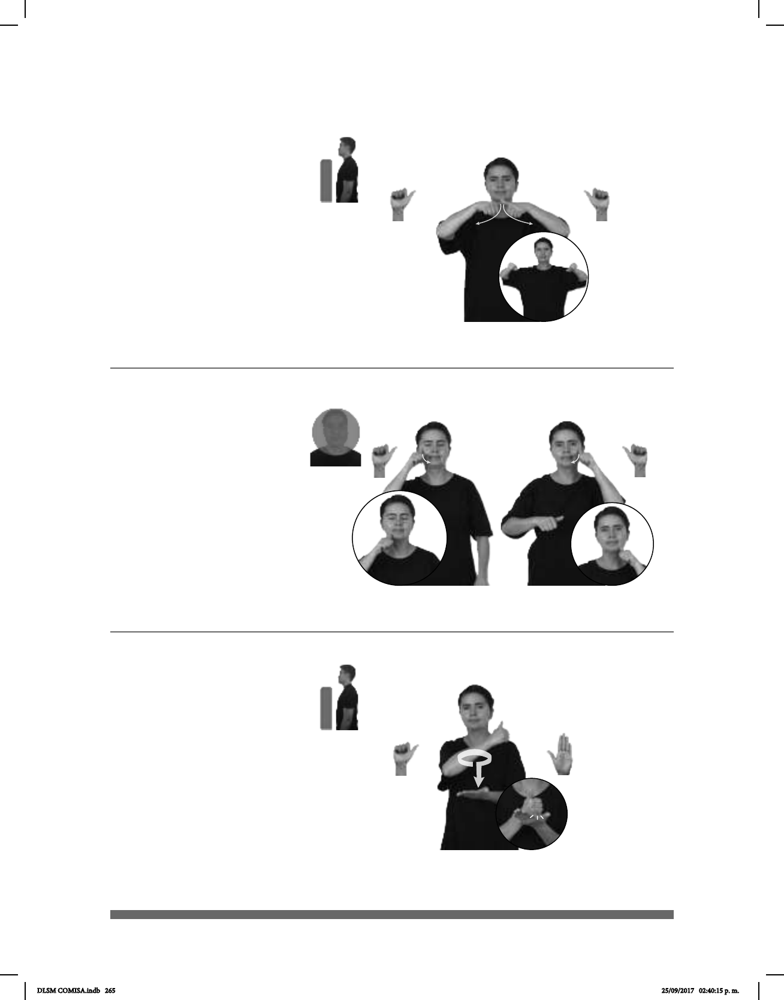

265
(A-98)
(A-97)
SEMANA PASADA CINTA CANELA pro-YO COMPRAR CENTRO
allá
La semana pasada compré cinta canela en el Centro.
TODAVÍA CIRUGÍA pro-YO CURAR
Me estoy recuperando de la cirugía.
(A-99)
MAÑANA CIUDAD MONTERREY pro-NOSOTROS IR
Mañana iremos a la ciudad de Monterrey.
Seña: SS
A.1
Palmas hacia abajo.
Del cuello a los
hombros.
Las manos parten de
un mismo punto y luego se abren
hacia los lados.
sust. f. Tira larga y
angosta de diversos materiales
etc., que tiene distintos usos.
Seña: SB
MD y MB A.1
MD palma oblicua hacia
la izquierda y hacia abajo. MB palma
oblicua hacia la derecha y hacia abajo.
MD y MB inician sobre
las mejillas y terminan a la altura del
pecho.
MD y MB se mueven
formando un arco alternadamente.
Simula una cirugía
en el rostro.
sust. f. Parte de la
medicina que se ocupa de la curación
de ciertas enfermedades por medio
de una operación que implica cortar o
extirpar tejido con la mano con
instrumentos especiales como el bisturí.
Seña: SB
MD A.1, MB B-P.2
MD palma hacia dentro.
MB palma hacia arriba.
A la altura del pecho. MD
sobre MB.
La MD se mueve
formando un círculo y después golpea
a la MB.
sust. f. Conjunto de
ayuntamiento cuya población densa y
actividades no agrícolas.
DLSM COMISA.indb 265 25/09/2017 02:40:15 p. m.